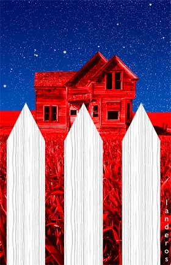

The Political and the Personal
An account of how each has, sadly, imposed itself on the other.
- - - - - - - - - -
by David Neiwert
 HERE'S ONE THING about growing up in a place like Idaho: If you can't make friends with conservatives, you won't have many friends. And as my oldest friends can tell you, the truth is that I used to be fairly conservative myself. I come from a working-class family -- my mother's side of the family was in road construction, and my dad's was mostly a farming family, though his father actually was an auto mechanic. HERE'S ONE THING about growing up in a place like Idaho: If you can't make friends with conservatives, you won't have many friends. And as my oldest friends can tell you, the truth is that I used to be fairly conservative myself. I come from a working-class family -- my mother's side of the family was in road construction, and my dad's was mostly a farming family, though his father actually was an auto mechanic.
Working-class values, and my belief in blue-collar virtues -- like integrity, decency, hard work, honesty, common sense, and fair play -- all were quite deeply ingrained. When I was younger, I really believed that conservatism best embodied those values.
Over the years that morphed, especially as I worked as a newspaperman (beginning in about 1976, when I was just turning 20). I was confronted innumerable times with realities that conflicted with my old preconceptions. I came to know hard-working Democrats who had the highest integrity and greatest decency (people like Frank Church and Cecil Andrus). I got to know Republicans who were prolific liars of the lowest integrity (like George Hansen, Steve Symms and Helen Chenoweth). And, of course, I got to know scumbag Democrats and honest Republicans as well, people who jibed with my old worldview. But it was obvious that the old construct was not really valid.
What became especially clear was that -- even though I had always believed, and still do, that upper-class and urban liberals are prone to a phony compassion that only extended to various victim classes, rather like a parlor game, often rationalized with a tortuous intellectualism -- conservatives likewise were fond of wrapping themselves in my old-fashioned, working-class values (along with the American flag, of course) while utterly undermining the ability of ordinary, working-class people to make a decent living and obtain equal opportunity.
Conservatism, especially in the past 20 years, has come less to represent those old-fashioned values, and instead has become a watchword for rampant, unfettered corporatism. Republicans in Idaho particularly were fond of gutting my state's heritage -- letting "free enterprise" pollute our streams, wipe out fish runs and wildlife habitat, destroy the forests in which I used to hunt and fish -- while proclaiming they were doing so in the name of "liberty." They weren't the party of the little people, despite their pose, which so many people I knew bought into. They were the party of the fat cats who bellied up to the public trough, trashed our lands, and walked away fatter and fancy free.
 N THE END I realized that, when it came to everyone from personal friends to politicians, ideology mattered a great deal less than the person. The proof, in what is now my entrenched view, lies both in the personal integrity they exhibit and in the kinds of policies they promote. It came to matter less and less to me whether a person was Republican or Democrat; what counted, in a politician especially, was how straightforward and honest they were in dealing with the public, how well they balanced the needs of everyone with the rights of the individual, and most of all, how well they made better the lives of ordinary people. N THE END I realized that, when it came to everyone from personal friends to politicians, ideology mattered a great deal less than the person. The proof, in what is now my entrenched view, lies both in the personal integrity they exhibit and in the kinds of policies they promote. It came to matter less and less to me whether a person was Republican or Democrat; what counted, in a politician especially, was how straightforward and honest they were in dealing with the public, how well they balanced the needs of everyone with the rights of the individual, and most of all, how well they made better the lives of ordinary people.
Moreover, I came distinctly to distrust ideologues -- because, I realized, ideas are more important to them than people. This observation arose first out of personal experience, because most ideologues are likely to reject friendships with those who don't think like them or fit their ideologies. I might be able to maintain a friendship with an ideologue (right or left) for awhile, but inevitably, they would reject me because I didn't fit the mold they wanted to make. Eventually this insight translated to my view of politicians and public figures as well. It has been for some time clear to me that hardened right-wing and left-wing partisans alike place their abstractions well above what happens to ordinary citizens in real life.
This is probably why, when I first became involved in anti-racist organizations, I became embroiled in some nasty fights with some of the avowed Communists who often partake of this work. In my view, Stalinist Communism is the epitome of the blinkered, anti-personal ideology of the left, and I've always been a fairly severe anti-Communist.
But over the past 10 years or more, I've become much more concerned about conservatism, largely because it has itself morphed from a style of thought, like liberalism, into a decidedly ideological movement. One never hears of a "liberal movement," while the "conservative movement" proudly announces its presence at every turn. Conservatism has become highly dogmatic and rigid in its thinking, allowing hardly anything in the way of dissent -- indeed, it is nowadays practically Stalinist itself, especially in the way it punishes anyone who strays from the official "conservative" line.
This became abundantly clear over the years, on a personal level, as I became increasingly accused of being a "liberal" merely for questioning conservative dogma. Of course, my truly liberal friends always suspected me of latent conservatism (probably true), but in the past decade especially, I've had to finally accept the "liberal" label simply because it has come to be plastered on anyone who is simply "not conservative."
Still, this has never changed my basic view that people are more important than their politics. I've always managed to maintain a substantial number of conservative friends (not to mention all those members of my extended family who are conservative). These are people I go hunting, fishing and camping with; people whose weddings I attend, and whose children I babysit and tend, people I stay with while on vacation. Because their value as my friends always far superseded whatever politics they might choose to espouse, and this was something I always felt was reciprocated. And of course, I always voted a split ticket, looking usually to reward moderate and progressive Republicans -- though this has become increasingly difficult in recent years.
But in the past three years, even that has begun to change.
HERE WERE TWO crucial turning points: December 12, 2000, and September 11, 2001. When the Supreme Court handed down its ruling in Bush v. Gore, it became clear to me that not only had the conservative movement grown into a dogmatic ideology, it had metastacized into a power-hungry, devouring claque of ideologues for whom winning was all that mattered. I also knew, of course, that not everyone who participated in the movement was like this -- but they were all too willing to let those who were run a steamroller over every basic principle of democratic rule -- especially its core of equity and fair play -- in the name of obtaining the White House.
I remember rather vividly, like the day JFK was shot, where I was and what I was doing, the evening the ruling came down. I was in a small harbor town in western Washington, staying with the parents of some close friends (who are themselves good friends) while I covered a manslaughter trial in a nearby town. He is an accountant, she a homemaker, good moderate churchgoing Democrats. We all sat together and watched the bulletins come over the newscasts (I think we were tuned to MSNBC).
And I remember she turned to me and said: "I feel sad. Because I can't vote a mixed ticket anymore." He nodded.
So did I. I knew exactly what she meant.
It is, frankly, foolishness at this point in time to even vote for a Republican. Not because the party lacks candidates who are utterly unworthy of support; there are, indeed, smart, thoughtful and honest Republicans even still, though they are harder to come by. But even they represent, and remain an integral part of, a party that has become nearly absolutely corrupted by its near-absolute power, and almost permanently tainted by its lust for utter control of the political and social landscape.
I decided then that, for the foreseeable future, I could not cast my vote for any Republican on any ballot. The GOP, after its performance in 2000 -- and especially considering its performance in the intervening years -- will not have my vote. They have proven themselves utterly untrustworthy, and thereby unworthy of the responsibilities and honor of public office. And I know that I am not alone in this: The GOP no longer will have the votes of many other middle-of-the-road Americans, including my friends' parents.
Ultimately, all politics is personal, and human nature being what it is, there was a measure of mistrust of all conservatives that came with this assessment. What I observed over time was that none of my conservative friends would seriously defend Bush v. Gore but would switch subjects or revert to a "get over it" kind of response. None would acknowledge that there were perfectly good, perhaps even patriotic, reasons not to get over it. None would acknowledge that, were the shoe on the other foot, they too would be seriously outraged -- and I mean long-term outrage.
And so the feeling grew on my part that they neither were being honest nor being, at base, civil in its core sense. Maybe I was wrong to feel this way, I don't know; but I felt it. I tried not to let it show, but it was there. And it was a wedge in our friendships.
 HAT SEEMS TO HAVE really ripped things apart, though, was the aftermath of September 11. And this came down not so much to my feelings, but to theirs. There's no doubt my feelings about the legitimacy of George W. Bush's presidency affected my view of his behavior after the terrorist attacks. In fact, I was profoundly dismayed that someone as manifestly unfit for the office was occupying it at such a crucial moment in history. Now, had Bush gone about pursuing the war on terrorism seriously, building multinational coalitions; recognizing the myriad faces of terrorism, and the limits of the military response; perhaps even recognizing when a criminal-justice response is more warranted; and uniting the nation around a genuine consensus -- well, then, I would have been forced to change my opinion of the man. I would have backed him as gladly as the Glenn Reynoldses and Andrew Sullivans are urging us to do now. HAT SEEMS TO HAVE really ripped things apart, though, was the aftermath of September 11. And this came down not so much to my feelings, but to theirs. There's no doubt my feelings about the legitimacy of George W. Bush's presidency affected my view of his behavior after the terrorist attacks. In fact, I was profoundly dismayed that someone as manifestly unfit for the office was occupying it at such a crucial moment in history. Now, had Bush gone about pursuing the war on terrorism seriously, building multinational coalitions; recognizing the myriad faces of terrorism, and the limits of the military response; perhaps even recognizing when a criminal-justice response is more warranted; and uniting the nation around a genuine consensus -- well, then, I would have been forced to change my opinion of the man. I would have backed him as gladly as the Glenn Reynoldses and Andrew Sullivans are urging us to do now.
But Bush, of course, did not. Because he is so grotesquely shallow a leader, he has essentially allowed a cadre of genuine radicals -- specifically, the "neoconservative" ideologues from the Project for a New American Century -- to take control of both our foreign policy and the entire direction of the "war on terrorism." The result has been that we have spit in the face of our traditional allies, as well as the United Nations (and then had the temerity to come back to them demanding help when it all turned sour); only limited recognition that terrorism has a home-grown face as well; embarked on an invasion of another country with the September 11 attacks as a pretext, while such claims have not proven to be well-grounded; and completely divided the nation by making out dissenters from the radical direction in which he has taken the nation as "unpatriotic."
In other words, Bush has done exactly the opposite of what needed to be done to reconcile those of us who doubted his legitimacy -- and at the time of his inauguration, this was some 40 percent of the nation, according to The Washington Post -- to his presidency in these critical days. This is why my desire to remove him from office in 2004 has gone unabated. And those who know me, of course, also know that I am not abashed about voicing my opinion. I try not to be pugnacious, but I can be fairly blunt.
T IS IN THE LAST of these failures -- painting dissent as treason -- that the president, his administration and the accompanying pundits (or rather, the choir of sycophants) all have affected us all personally, and badly. Because that view has become the worldview of mainstream conservatives in all walks of life. It's manifested itself not just in nationally prominent scenarios like the attacks on the Dixie Chicks and other entertainment folk, but in other smaller and lesser-known ways, too, like the way conservative officers are driving liberal soldiers out of the military. The clear message in these cases: Dissent is disloyalty.
Even conservatives who have dared dissent have been drummed out of "the movement." The Stalinism inherent in this mindset was vividly on display, I thought, when longtime conservative Philip Gold of The Discovery Institute announced he was opposing an attack on Iraq -- for reasons, I should note, that were almost identical to mine, and which I think have proven prescient -- and he was promptly dropped from the Institute (which has, it must be noted, increasingly come under the influence of Christian Reconstructionist Howard Ahmanson in recent years). It should be noted, too, that Gold has been forced to reach the same conclusion as I: that "conservatism has grown, for lack of a better word, malign."
Most of all, the prevalence of the "dissent is treason" meme has affected how ordinary people relate to each other, in profoundly negative ways.
I have heard all kinds of anecdotes about interpersonal alienation over Bush and his handling of the "war on terror." Some of these involve family members, others longtime friendships. One can only imagine what scenes will erupt from the coming Thanksgiving and holiday seasons too. For myself, it is not profound, but noticeable: invitations to traditional camping and fishing trips not issued; letters ignored; cold and brusque treatment when we do get together. A decided lack of communication and a clear sense of rejection.
And it's too plain why: I and my fellow "Saddam-loving" liberals are all traitors. They know, because Rush Limbaugh and Ann Coulter and everyone else out there has told them so. Indeed, these right-wing "transmitters" have been pounding it into their heads for years now, and it's reaching fruition.
I don't really blame my friends for this, though of course I deeply resent their willingness to adopt such beliefs. It is a very hurtful thing, and it may take years to recover, if at all. But I'm trying to be patient, knowing that eventually they will come around.
 OSTLY I BLAME the Limbaughs and the Coulters, as well as the so-called "intellectual conservatives" who have given the meme cover by, if nothing else, refusing to denounce it, and in many cases actively furthering it (see, e.g., Instapundit's reference to antiwar liberals as "objectively pro-Saddam"). OSTLY I BLAME the Limbaughs and the Coulters, as well as the so-called "intellectual conservatives" who have given the meme cover by, if nothing else, refusing to denounce it, and in many cases actively furthering it (see, e.g., Instapundit's reference to antiwar liberals as "objectively pro-Saddam").
But I no longer much trust in the moral strength of my conservative friends. Whereas once I believed that the basic decency of average, mainstream conservatives was more than an adequate bulwark against the possibility of right-wing fascism from ever manifesting itself, I have been forced to conclude that, when swept along by the combination of a movement and the fearmongering of public officials, they are as susceptible to doing the wrong thing as their ancestors were in 1942, when they shipped off 110,000 Japanese Americans to concentration camps.
My longtime analysis of the state of fascism in the past always presumed that mainstream, ordinary conservatives, whose decency I've never doubted, would act in concert with liberals in preventing any such thing from occurring here. But liberals, or at least their political leadership, have been simply too spineless to effectively counter such aggression; and conservatives, it has grown increasingly apparent, are now content to sit back and watch.
I came to this conclusion some time back, but it has been deeply reinforced by the mainstream conservative response to the rising tide of rhetoric that appears aimed at fomenting violence against liberals.
-- Ann Coulter's Treason is a bestseller, and she continues to make roundly applauded multiple media appearances broadcasting her pathological hatred of about half of all Americans, while her remarks suggesting an appreciation for violence against liberals (blowing up the New York Times, for instance) draw only apologetics from her fellows in the mainstream. Of course, by way of exception, David Horowitz has rather notably inveighed against Coulter's book -- but only because she also attempts to rehabilitate the reputation of Joseph McCarthy and uses too broad a brush in her smear job. Otherwise, he says, "in the long run, this will turn out to be a lesser fault than emphasizing the wrong problem or promoting America's enemies as America's victims -- which is what her liberal antagonists have done."
-- Kathleen Parker's recent approving publication of an anonymous military man's desire to take the nine Democratic candidates, line them up against a wall and shoot them has gone completely unremarked by mainstream conservatives.
-- While a few conservative bloggers (notably Reynolds) have offered tepid tut-tuts in response to one noted conservative blogger's fantasy about gunning down congressional and high-court liberals, a number of other examples of similarly eliminationist rhetoric from the right side of the blogosphere have gone simply unremarked. Moreover, while bloggers like Tacitus seem willing to draw all kinds of conclusions from commenters in various threads at liberal Web sites, little attention, seemingly, is paid to the kinds of comments that are commonplace at certain sites.
This isn't in the same category as, say, the hate mail that most of us who work in the public sphere are usually well familiar with. (Though the wide-eyed horror with which conservative journalists and pundits, of late, receive such material is always a source of easy amusement: Hello, people! How long did you say you've been in this business?) Nor, for that matter is it comparable even to some of the more disgusting commentary that exudes from the left side of the blogosphere. These are nationwide broadcasts of the rhetoric of violence, sometimes under the guise of "humor," whose underlying attitudes are not only transmitted to a wide audience, but the generally quiet acceptance with which they are broadcast itself sends a powerful message: that not only is this kind of talk acceptable, but the underlying attitudes are positively endorsed. Likewise, where there is silence on the part of decent mainstream conservatives, the kind of people who would act on this rhetoric hear tacit approval.
Perhaps I'm more sensitive to this kind of rhetoric than most, because I've been exposed to it for a long time. It is hardly different in nature from the kind of hate regularly spewed by the cross-burners at Aryan Nations, who of course hate mainstream liberals right alongside Jews, blacks, and every other permutation of their Other. One bleeds into the other for them -- and eventually, it does likewise for everyone else who partakes of this kind of talk. There is a special quality to eliminationist rhetoric, and it has the distinctive stench of burning flesh -- no matter where it emanates from.
If I thought for a moment that talk about committing violence against conservatives were as pervasive, especially in the public square, as it currently is against liberals, I do not doubt that I would do my best to attack it. But I almost never hear it from that sector now. For the past twenty or more years, I've been hearing it from the far right. And it deeply disturbs me when I begin hearing it from people who supposedly operate within the mainstream.
 NE OF THE IMPORTANT THINGS I learned as a cops-and-courts reporter lo these many years ago was something about crime victims: That they often make themselves vulnerable to violent crimes because they are not prepared to deal with people who are sociopathic, or who exhibit antisocial or narcissistic personality disorders, or in some cases outright psychoses. That they project their own normalcy onto these other people -- they really cannot believe that someone else would act in a way substantially different from their own decent, sane base of operations. NE OF THE IMPORTANT THINGS I learned as a cops-and-courts reporter lo these many years ago was something about crime victims: That they often make themselves vulnerable to violent crimes because they are not prepared to deal with people who are sociopathic, or who exhibit antisocial or narcissistic personality disorders, or in some cases outright psychoses. That they project their own normalcy onto these other people -- they really cannot believe that someone else would act in a way substantially different from their own decent, sane base of operations.
In a way, I think this is a large part of what is happening to our national body politic: People in key positions of media and conservative ideological prominence (Coulter, Limbaugh, even Bill O'Reilly) exhibit multiple symptoms of being pathological sociopaths, either antisocial or narcissistic, or a combination of both. And not only their fellow participants in the conservative movement, but mainstream centrists and even liberals are unable to figure out that there is something seriously wrong with these people because they are projecting their own normalcy onto them. They cannot perceive because they cannot believe -- that, above all, these people are not operating within a framework guided by the boundaries of basic decency that restrain most of us.
They are political muggers out of control -- and as their rhetoric encourages both the figurative and physical elimination of liberals, they become ever more likely to actually tread into regions of real violence.
This is why all the talk about liberal incivility is such a joke. For the past decade liberals have been increasingly subjected to a brand of conservative ridicule that has explicitly blamed them for every one of society's ills, and it has come relentlessly and from every quarter of the increasingly politically dominant conservative sphere. Now that rhetoric is reaching a violent pitch -- and if Oklahoma City should have taught us anything, it was the consequences of spreading this kind of hate. Much as conservatives like to argue that liberals are guilty of the same thing, there really is no parallel to this on the left, at least not since the early 1970s.
What relatively mild incivility that liberals now exhibit is comparatively minuscule in proportion and prominence. Liberals have in fact been, by comparison, the picture of civility, especially since Sept. 11. Remember all those Democratic votes for Bush's war initiatives and the Patriot Act. Remember that there still has been no serious investigation of the causes of Sept. 11, in no small part because the White House has refused to cooperate -- but also because neither Democrats nor moderate Republicans have collected the political will to get it done, and done right.
Remember, if you will, the stories about the Democratic insiders who, after Sept. 11, told reporters they were relieved that George Bush was the president and not Al Gore -- not, as it happened, because they thought Bush would do a better job, but because they realized (quite correctly) that Republicans would never have rallied around Gore the way that Democrats were willing to get behind Bush in a time of grave national crisis. That they would, more than likely, have tried to seize political advantage from it by the same kind of absurdist machinations that drove Clinton's impeachment. Strangely enough, many conservative organs touted this news story as "proof" they had done the right thing, and that Bush was the right man for the job.
In fact, it has been a longstanding contention of mine that if Sept. 11 had occurred on Al Gore's watch, Congress would have long ago convened impeachment hearings that would have been a classic Fox News show trial. Dan Burton would have been out in his back yard flying model airplanes into watermelons, and Ken Starr would have found reasons to issue a detailed 9,000 page report on Tipper and Al's sex life, which armchair psychiatrists like Charles Krauthammer, William Safire and Andrew Sullivan would have pronounced as the deep psychological root of the Sept. 11 attacks. At the end of the impeachment process, the Scalia Five would have issued a ruling allowing Congress to name a Republican as Gore's replacement.
 OW IS ANY KIND of normative political discourse possible in this environment? How is it possible to be civil to people who constantly are placing you under assault? How can there be dialogue when the normative rules of give and take and fair play have not only been flushed down the drain, but chopped into bits and swept out with the tide? Do the advocates of civility place any onus on the nonstop verbal abuse, and absolutely ruthless, win-at-all-costs politics emanating from the conservative quadrant? And do they really expect liberals to refuse to defend themselves, when even doing so gets them accused of further incivility? OW IS ANY KIND of normative political discourse possible in this environment? How is it possible to be civil to people who constantly are placing you under assault? How can there be dialogue when the normative rules of give and take and fair play have not only been flushed down the drain, but chopped into bits and swept out with the tide? Do the advocates of civility place any onus on the nonstop verbal abuse, and absolutely ruthless, win-at-all-costs politics emanating from the conservative quadrant? And do they really expect liberals to refuse to defend themselves, when even doing so gets them accused of further incivility?
I'll believe conservatives are serious about civil, adult dialogue when they step back and give liberals some breathing room. When "civil" conservatives seriously confront the violent and vicious rhetoric coming from their own quarters; when they do away with suggesting that their political opponents are somehow disloyal Americans; and when they finally acknowledge that people's concerns about the legitimacy of the process by which Bush obtained office are not only well grounded but driven more by patriotic feeling than partisan rancor -- then, perhaps, they can expect to start seeing some civility in return.
But until then, they should not expect liberals to take the evisceration of their lives, both political and personal, lying down. The Culture Wars that they have been recklessly pursuing are slowly growing into a genuine and significant rift in American society. And it cannot be healed until both sides are willing.
It grieves me to see old friendships and relationships actually damaged by this war. But it was not a fight I or other liberals chose. It was thrust upon us. And until that aggression comes to a stop, I will not stop fighting back. Civilly, of course, but with all the blunt force and passion I can muster.
Because, yes, it is political -- but it's also become personal.
Reprinted from Orcinus

|